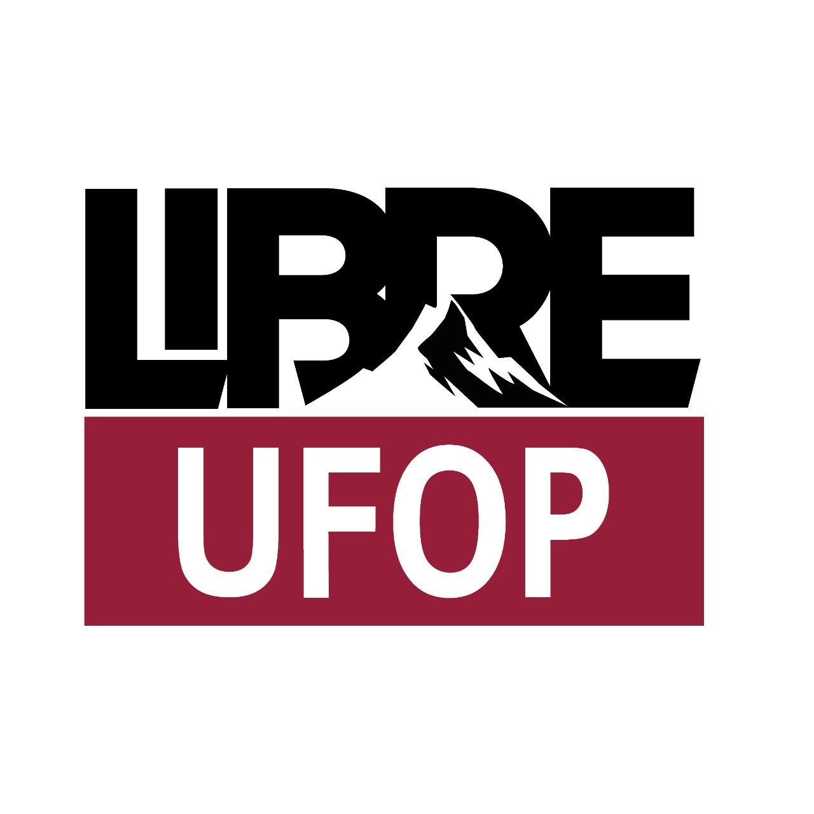

Programar Liberta!
Software Livre, Formação e Integração com a Comunidade. Promovendo soberania digital e conhecimento aberto na Universidade Federal de Ouro Preto.

O LibreUFOP é um projeto de extensão da Universidade Federal de Ouro Preto voltado à promoção do software livre, da inclusão digital e da formação tecnológica crítica e colaborativa. O projeto busca aproximar universidade e comunidade por meio de oficinas, eventos, grupos de estudo e ações extensionistas relacionadas a GNU/Linux, tecnologias abertas e cultura FLOSS (Free/Libre and Open Source Software).
Mais do que ensinar ferramentas, o LibreUFOP pretende construir espaços de aprendizagem coletiva, troca de experiências e fortalecimento da autonomia tecnológica. As atividades são organizadas por estudantes e professores da UFOP em diálogo com escolas, comunidades e pessoas interessadas em tecnologia, sempre com foco na democratização do conhecimento e no impacto social das tecnologias abertas.
"A liberdade de usar, estudar, modificar e distribuir software é um bem coletivo que pertence a toda a humanidade."
Episódios com discussões aprofundadas, entrevistas e análises sobre o ecossistema de software livre, cultura hacker e soberania digital.
Em breveReceba diretamente no seu e-mail novidades, tutoriais, dicas de ferramentas livres e informações sobre nossos próximos eventos e atividades.
Em breveAcompanhe todas as nossas atualizações em tempo real de forma descentralizada, sem depender de algoritmos ou plataformas proprietárias.
Abrir feed.xmlTambém teremos uma base de conhecimento voltada ao universo GNU/Linux, com tutoriais, guias, documentação, dicas práticas e conteúdos para iniciantes e usuários avançados.
Em breveNo LibreUFOP, estudamos tecnologias livres utilizadas tanto no meio acadêmico quanto em ambientes profissionais modernos. Nossos encontros e oficinas abordam temas técnicos, sociais e colaborativos relacionados ao ecossistema do software livre.
As atividades são abertas a diferentes níveis de experiência, incentivando aprendizagem prática, colaboração e construção coletiva do conhecimento.